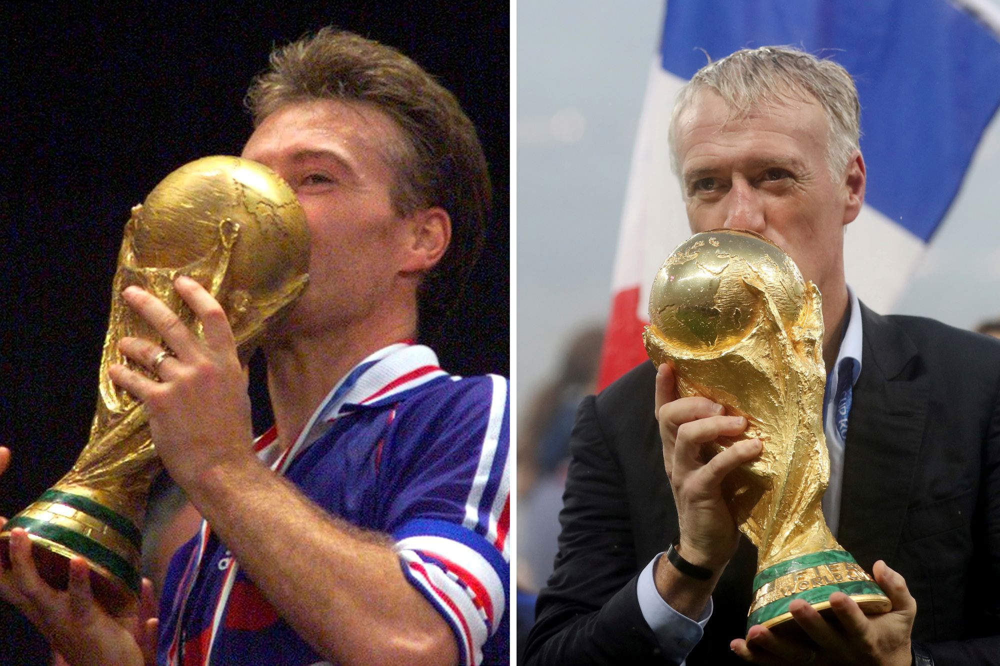

Didier Deschamps : Le baisser de rideau du gagneur ultime du football français

C'est une page immense, vertigineuse, qui se tourne pour le football français. Alors que Didier Deschamps s'apprête à quitter son poste de sélectionneur de l'Équipe de France, c'est tout un pan de notre histoire contemporaine qui range les crampons. Pendant plus d'une décennie sur le banc des Bleus, "DD" a été le visage de la France qui gagne. Mais résumer Deschamps à son seul costume de sélectionneur serait une erreur impardonnable.
⬇️ Lire la suite / Réduire
Pour les nostalgiques et les fouineurs de bandes VHS, Didier Deschamps, c'est avant tout un palmarès de joueur inégalé, une culture de la gagne forgée dans l'exigence des années 90, et un pragmatisme qui a fait pleurer tout le continent. Retour sur l'itinéraire d'un monstre sacré.
🛡️ Le Joueur : Le "porteur d'eau" devenu Roi du Monde
Éric Cantona l'avait un jour surnommé, avec un brin de condescendance, le "porteur d'eau". Mais Didier Deschamps a transformé cette étiquette en un véritable art de vivre tactique. Formé à la grande école du jeu à la nantaise, c'est sous le maillot de l'Olympique de Marseille qu'il devient une icône. Capitaine courageux, il soulève la mythique Coupe aux grandes oreilles en 1993, devenant le plus jeune capitaine à remporter la Ligue des Champions.
Mais l'appétit de "Dédé" ne s'arrête pas aux frontières de l'Hexagone. Il s'envole pour la Juventus Turin de Marcello Lippi, où il devient le métronome d'une équipe impitoyable. Avec la Vieille Dame, il roule sur l'Italie et sur l'Europe, remportant une nouvelle Ligue des Champions en 1996.
Et puis, il y a l'apothéose. Le brassard de l'Équipe de France. Ce leader vocal et tactique devient le relais indispensable d'Aimé Jacquet sur le terrain. Il soulève la Coupe du Monde 1998, puis l'Euro 2000, imposant le respect à la planète entière. Revoir un match complet de Didier Deschamps à cette époque, c'est observer une masterclass de placement, d'anticipation et de vice positif.
👔 L'Entraîneur : Le pragmatisme érigé en chef-d'œuvre
Ranger les crampons n'a pas calmé sa soif de victoire. Passé de l'autre côté de la ligne de touche, Deschamps devient un bâtisseur de succès. Il emmène d'abord l'AS Monaco dans une épopée irrationnelle jusqu'en finale de la Ligue des Champions en 2004 (une campagne légendaire que tout fan de football vintage se doit de posséder).
Il ramène ensuite la Juventus en Serie A après le scandale du Calciopoli, puis accomplit un autre miracle : offrir à l'Olympique de Marseille son premier titre de Champion de France (2010) après 17 ans de disette.
En 2012, il prend les rênes d'une Équipe de France en pleine reconstruction. La suite appartient à l'Histoire. Il insuffle son ADN de gagneur à une nouvelle génération, bâtissant une machine froide, solidaire et chirurgicale. Le point d'orgue ? La deuxième étoile accrochée en Russie en 2018. Deschamps rejoint alors le cercle ultra-fermé (avec Zagallo et Beckenbauer) de ceux ayant remporté la Coupe du Monde en tant que joueur et entraîneur. S'il quitte aujourd'hui le banc tricolore, il laisse derrière lui un héritage monumental et une culture de la victoire qui marquera les Bleus pour les décennies à venir.
📼 Revivez l'ADN Deschamps dans le Grenier
L'histoire de Didier Deschamps ne se lit pas seulement dans les livres de statistiques, elle se visionne. Dans Le Grenier du Football, la trace du capitaine et sélectionneur des Bleus est omniprésente.
Vous voulez revoir le sacre de Munich avec l'OM en 1993 ? Les batailles tactiques de la Juventus Turin des années 90 ? Ou l'épopée fondatrice de Monaco en 2004 ? Utilisez notre outil de Recherche Avancée pour explorer notre catalogue.
Sélectionnez simplement les équipes de sa carrière ou filtrez par la compétition de votre choix. Pour chaque match, vous aurez la liberté de choisir votre format idéal : la pureté absolue du format DVD (fichiers .VOB d'origine) pour retrouver l'image cathodique de l'époque, ou la praticité du format Numérique (MP4, AVI...) pour vos écrans modernes.
Didier Deschamps tire sa révérence, mais ses plus grands combats vous attendent au fond du Grenier. À vous de les revivre !